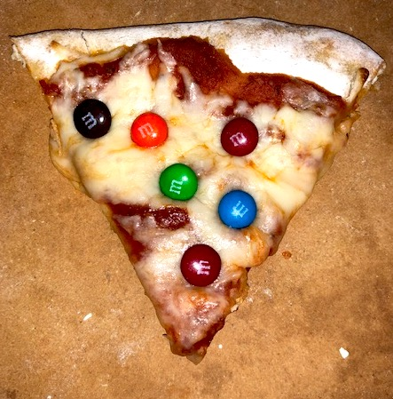
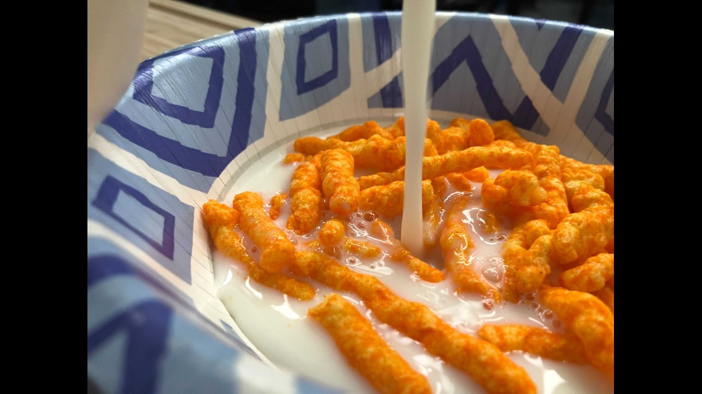
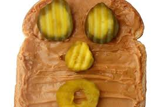
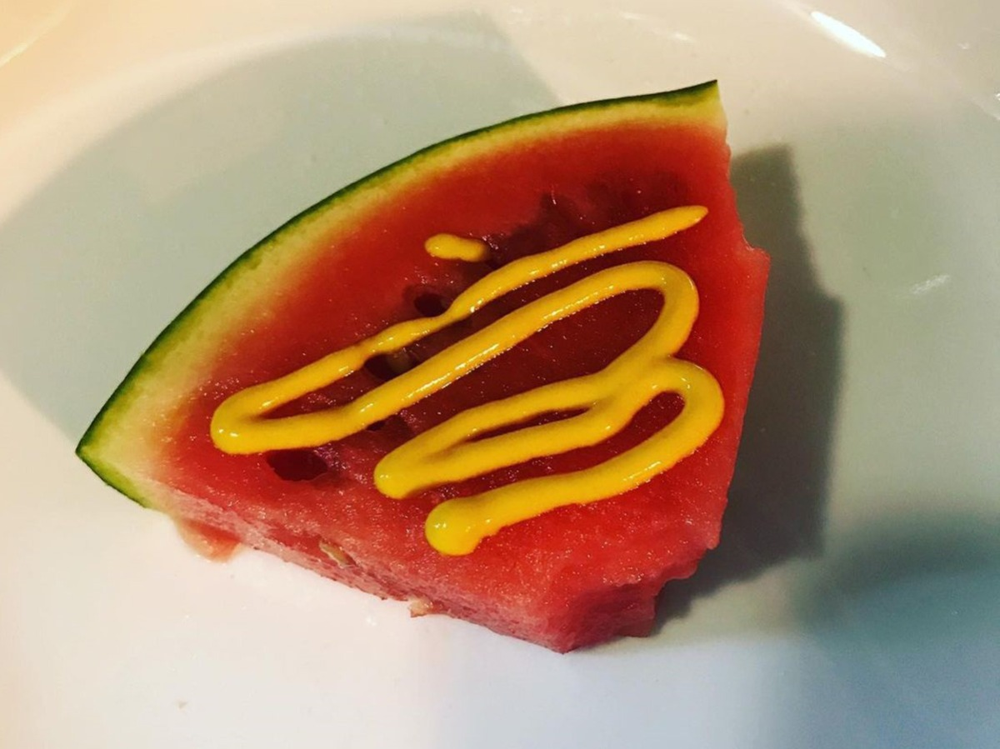

Recipes
Chocolate

Not in the mood for target? Come make your own chips.
Ingredients
- 1 Chocolate powder pack
- 2 Milk
- 0.5 oz Cream
Izza
Pizza fan? M&M fan? I have the recipe for you
Ingredients
- 8 M&Ms (multi-color)
- 1 slice of pequod's pizza
Meeto
Number #2 best food combo out there.
Ingredients
- 1.5 bags of mild cheetos
- 2 glasses of warm milk
- spoon
Michael
If you're feeling ill or down, make yourself this thang.
Ingredients
- toast and toaster
- 5 slices of pickes
- Trader Joe's creamy unsalted peanut butter
Walter Melon
A summertime classic! Great to cool you off on a warm, sunny afternoon.
Ingredients
- Watermelon (1)
- Heinz mustart (2 teaspoons)
- A can-do attitude